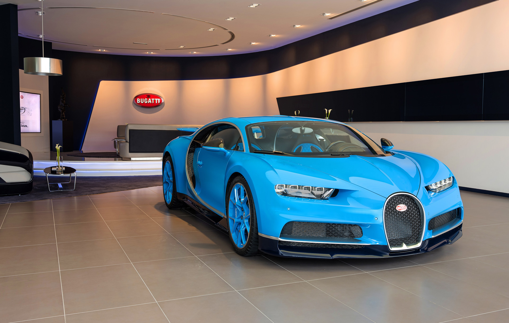

About us
Hello car lovers! Welcome to **SpaDeAutos**, now available online for easy and convenient slot booking at our luxurious, high-tech, and fully equipped Carspa garage. With world-class facilities and advanced technology, we ensure your vehicle receives premium care and attention at every stage.
At Carspa, we specialize in transforming vehicles—from restoring vintage classics to upgrading cars into modern luxury machines. We offer the best services at affordable prices, ensuring a smooth and hassle-free experience for our customers. Our team consists of highly skilled mechanics and experienced engineers dedicated to delivering exceptional quality, turning even an ordinary car into your dream car with precision and excellence.
Some of our best works
Ferrari (MF 19627)
 This vehicle is the iconic vintage Ferrari once owned by Sir Dormam, a rare and historically valuable automobile representing a golden era of automotive craftsmanship. Our team undertook an ambitious project to modernize this classic Ferrari while carefully preserving its original character and legacy. The goal was to seamlessly blend timeless design with contemporary performance, creating a car that respects its heritage yet meets modern expectations.
This vehicle is the iconic vintage Ferrari once owned by Sir Dormam, a rare and historically valuable automobile representing a golden era of automotive craftsmanship. Our team undertook an ambitious project to modernize this classic Ferrari while carefully preserving its original character and legacy. The goal was to seamlessly blend timeless design with contemporary performance, creating a car that respects its heritage yet meets modern expectations.
The transformation included a complete engine upgrade and performance reengineering, making the car significantly faster, more efficient, and more reliable than before. To achieve the highest level of precision and authenticity, we collaborated with a former Ferrari engineer whose expertise ensured that every modification aligned with Ferrari’s engineering philosophy. This project stands as one of our finest achievements, showcasing our ability to combine classic automotive heritage with cutting-edge technology.
bugatti (MF 13823)

This is the Bugatti owned by Miss Votex, an exclusive and high-value automobile that reflects the pinnacle of luxury and performance engineering. Our team carried out a comprehensive upgrade of the vehicle, enhancing its exterior color, engine system, and overall functionality to elevate both its visual appeal and driving capabilities while maintaining Bugatti’s signature elegance.
The project involved advanced performance tuning and mechanical refinements that made the car significantly faster, more responsive, and more efficient than its original form. This transformation is regarded as one of our greatest achievements, earning us the **Best Garage Award** in recognition of the precision, innovation, and excellence demonstrated throughout the project.
© SpaDeAutos (Sarvesh Aapshette)